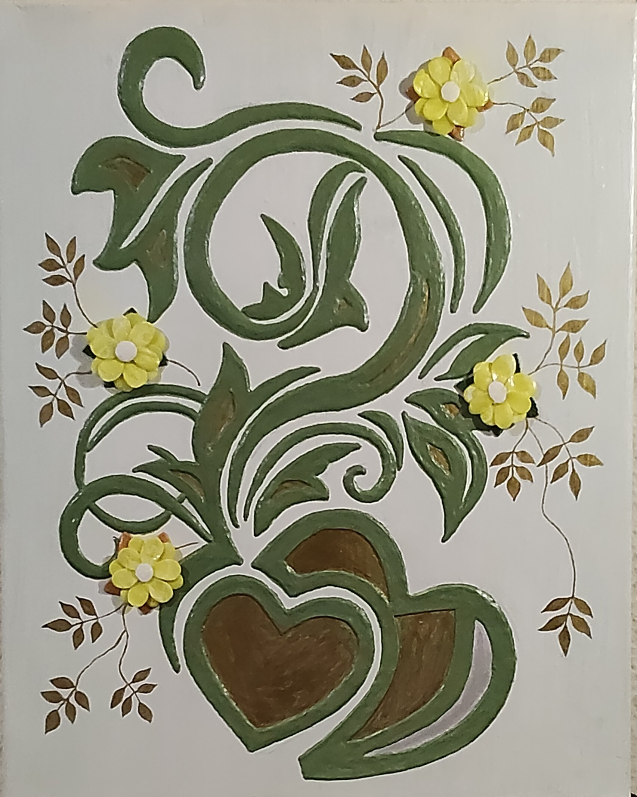

NICOLETA FILIP ART
LIENZO FLORAL 2
Composición ornamental de inspiración vegetal, estructurada mediante grandes formas curvas y hojas estilizadas en tonos verdes y marrones, acompañadas de flores amarillas y elementos ramificados sobre un fondo claro.
Sobre la obra
LIENZO FLORAL 2 presenta una composición ornamental de inspiración vegetal, estructurada mediante grandes formas curvas y hojas estilizadas que recorren la superficie del lienzo.
Las flores amarillas, de pequeño formato y apariencia volumétrica, se distribuyen alrededor de la composición y se integran con ramas finas y hojas en tonos verdes, ocres y marrones.
El conjunto combina elementos florales y vegetales en relieve con decoración pintada, creando diferentes niveles de profundidad y un marcado carácter artesanal.
Presentación artística
Las flores desarrolladas en alto relieve constituyen uno de los elementos principales de la composición, aportando volumen y presencia sobre la superficie del lienzo.
Las grandes formas vegetales y las ramas estructuran el recorrido visual, mientras la combinación de relieve y decoración pintada aporta riqueza y profundidad al conjunto.
Ficha técnica
- Año
- 2026
- Dimensiones
- 40 × 60 cm
- Soporte
- Lienzo
- Técnica
- Técnica mixta, con flores realizadas en alto relieve artesanal mediante escayola y yeso.
- Categoría
- Floral
Si deseas recibir información sobre esta obra, puedes solicitarla directamente.
SOLICITAR INFORMACIÓN →